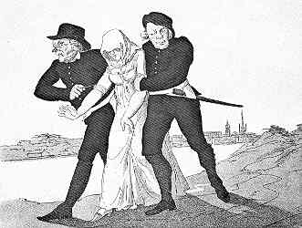
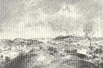
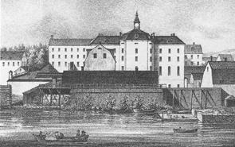

Södermalm i tid och rum
Ur Västra Södermalm intill mitten av 1800-talet, Arne Munthe, 1959
|
Under det tidigare 1700-talet togs Långholmen i anspråk för det ändamål, som alltsedan dess gett
en dyster belastning åt den natursköna holmens ursprungligen blott geografiskt orienterande namn. Som vi erinra oss hade Långholmen förut - bortsett från kronans tullhus och ett oansenligt båtvarv på holmens östra udde - i huvudsak fått sin karaktär av Joachim Ahlstedts anläggning, som utvecklat sig till en typisk malmgård, sedan ägarens ursprungliga planer på att utnyttja området även för industriellt bruk av okända orsaker skrinlagts. Tyvärr, får man väl säga - ur natur- och miljösynpunkt - avbröts denna tradition, genom att området nu utvaldes som en lämplig plats vid lösandet av en av tidens mest brännande sociala frågor. |
 "Paltar", stadens beslagskarlar, griper en kvinna. (P.Nordquist 1771-1805) |
Som en följd av de upprepade missväxterna under Karl XI:s senare regeringstid hade lösdriveriet utvecklat sig till en verklig landsplåga, särskilt outhärdligt för huvudstaden, dit mesta folket strömmade samman. För att lätta detta tryck hade redan 1694 planerats att upprätta en arbetsinrättning, varvid man även haft ett område på Södermalm i åtanke, nämligen Leijonanckerska tomten vid Hammarbysjön. Efter det särskilt svåra hungersnödsåret 1697 togo planerna fastare form och tycktes stå inför sitt snara förverkligande, sedan konungen skänkt staden en tomt vid Lilla Rörstrand för att inrätta ett »arbets-, rasp- och spinnhus». Efter krigsutbrottet 1700 fick emellertid frågan skjutas åt sidan, men den gjorde sig åter påmint blott ett par år in på frihetstiden.
|
  Utsikt mot Pålsundet från Reimersholme Utsikt mot Pålsundet från ReimersholmeT v spinnhuset på Långholmen, t h Bergsunds gjuteri. Akvarell av Elias Martin, 1787 |
Blickarna riktades nu på Långholmen, onekligen en mycket lämplig plats genom sitt isolerade läge. Joachim Ahlstedts egendom, som till 1707 besuttits av mågen Carl Brander, innehades numera av handlandena Johan Spalding och Anders Dahlström. Från dessa förvärvades domänen 1724 av kronan för 37.000 d.k.m. Några större omändringar hunno knappast äga rum, innan byggnaderna togos i anspråk för den nya inrättningen. Redan i september mottogos de första hjonen, och vid årets slut utgjordes beläggningen av 110 personer och 10 barn. |
Den nya inrättningens officiella namn var rasp- och spinnhuset. Den tog alltså sikte på både ett manligt och kvinnligt klientel: männen skulle sysselsättas med raspande av brisillieträ, som användes till färgstofter, och kvinnorna med att häckla och spinna lin. Något särskilt rasphus kom dock aldrig till stånd. Utom det olämpliga sammanförandet av manliga och kvinnliga element i samma inrättning fick klientelet också i övrigt en mycket brokig sammansättning, som på ett groteskt sätt stred mot den fundamentala principen för all fångvård, i den mån den också vill tjäna ett uppbyggande syfte. I anstalten skulle mottagas tiggande och vanartiga barn, som alltså närmast behövde omvårdnad och uppfostran, olydigt tjänstefolk, liderliga kvinnor, lättingar, lösdrivare och personer, som för smärre förbrytelser dömts till en lindrigare typ av arbete. Inrättningen kan alltså närmast karaktäriseras som en kombinerad barnuppfostrings-, tvångsarbets- och straffanstalt. Det betänkliga i en sammanblandning av så heterogena och lättpåverkade element stod fullt klart för ansvarigt folk även på den tiden.
Man kan med ett minimum av fantasi föreställa sig atmosfären i en sådan anstalt. Att den icke i någon högre grad kunde tjäna syftet att vara ett »förbättringshus» är tydligt; det klagades också över de intagnas »gudlösa och vanartiga uppförande». För den andliga vården skulle spinnhuspredikanten och klockaren svara. Offentliga gudstjänster höllos på sön- och helgdagar i spinnhuskyrkan, men 1756 uppges, att denna, som låg utanför anstaltens inhägnad, apterats till en frivillig verkstadslokal.
Barnens undervisning på onsdags- och söndagseftermiddagarna skulle under predikantens inseende handhas av klockaren. Tjänsten innehades på 1760-talet av en ökänd figur, den urspårade överliggaren Didrich Johan Trundman, av Bellman gjord till »ordensklockare och vice edsformulärförestavare» i Bacchi Orden. Spinnhuset var över huvud taget ingen okänd miljö för Bellman. Han var god vän med Hans Hansson Björkman, som - i en något överraskande kombination - förenade uppgiften som spinnhusinspektor med tjänsten som förste aktör och sångare vid Operan. Mycket talar för att spinnhuset, »kringhwärft av höga planck med taggar, spint och spetzar», utnyttjats av Bellman som en poetiskt tacksam miljö i det diktverk, kallat Fröjas Tempel, som han planerade att utge som en pendang till Bacchi Tempel men som aldrig blev tryckt och till vilket manuskriptet - fullbordat eller icke - nu tycks vara spårlöst borta.
| Spinnhusets karaktär att vara en arbetsinrättning till textilindustriens tjänst - dess upprättande hade påyrkats även från detta håll - betonades mer eller mindre starkt under en stor del av 1700-talet. Under långa perioder var anstalten utarrenderad till representanter för denna industri. Perioder, då textilfabrikörerna voro ytterst angelägna att erhålla det bidrag vid det första stadiet av fabrikationen, som anstalten kunde lämna, växlade med sådana, då spinnhusföreståndarna själva måste anskaffa de råvaror, som erfordrades för att hålla anstalten i gång. Spinnhusets ledning och kommerskollegium, som hade det högsta ansvaret för verksamheten, arbetade - ofta fåfängt - för att befria anstalten från ett sådant klientel, som icke kunde rationellt utnyttjas till arbete. |
 Utsikt mot Spinnhuset. Litografi av Albert Hård, 1850 |
Vid brist på arbetskraft anställdes klappjakt på stadens krogpigor; åtgärden riktade sig ytterst mot det fruktansvärt tilltagande superiet, som drastiskt illustreras genom en uppgift från 1757, att då skulle finnas över tusen krogar i staden. Tanken, att hjonen själva genom sina arbetsprestationer skulle kunna finansiera driften, visade sig redan från början vara en illusion. Det nödvändiga allmänna understödet anskaffades bl.a. genom en mycket brokig lyx- och nöjesbeskattning.
Först några decennier in på 1800-talet, till följd av de mera moderna ideer på fångvårdens område, som då började göra sig gällande, var tiden mogen för en reform av Långholmsanstalten. Förändringen av dess officiella namn till »korrektionshus» hade ingalunda motsvarats av några förbättringar av de inre förhållandena. I en ämbetsberättelse från 1813 karakteriserades anstalten av högste chefen för fångvården som »en för staten ganska skadlig och för mänskligheten motbjudande inrättning samt endast ett olyckligt förvaringsrum, där de flesta av alla åldrar och kön bliva både i moraliskt och fysiskt avseende alldeles fördärvade».
Det såg ett tag ut, som om den värsta nackdelen i organisationen, sammanblandningen av manliga och kvinnliga interner, skulle komma att konserveras för framtiden, men dess bättre stannade man i sista stund för en bättre lösning. Genom att det kvinnliga klientelet 1827 överflyttades till en ny anstalt på Norrmalm, blev Långholmsanstalten en rent manlig korrektionsinrättning. Genom stora utbyggnader bereddes plats för över 800 interner. Sin nuvarande karaktär fick Långholmsanstalten i och med att en ny fängelsebyggnad av celltyp 1881 kunde tagas i bruk.
Långholmens utkanter förblevo relativt oförändrade, även om marken under 1700-talet blev föremål för en rätt ingående stadsplanemässig reglering. Kronotullen flyttades på 1780-talet något väster ut, i vilket sammanhang tillkom den ännu från denna anläggning bevarade stenbyggnaden. Det i slutet på föregående århundrade grundade båtvarvet vid holmens sydöstra strand utarrenderades 1743 till handelsmannen Niclas Öhrn och började från den tiden få karaktären av ett verkligt skeppsvarv.
Mellan spinnhuset och Öhrn, som tycks ha varit en driftig man och även påtog sig uppgiften som stadens renhållningsentreprenör, uppstod strid om det mellan deras domäner liggande ängsområdet, kallat Björkhagen; den avgjordes till spinnhusets förmån. Huvudbyggnaden på Björkhagen uppfördes i början av 1800-talet. Senare fick Långholmen en annan malmgårdsliknande anläggning, nämligen Karlshäll, byggt till sommarresidens av brännvinskungen L. 0. Smith.
En korrektionsanstalt av annat slag än spinnhuset fick mot århundradets slut sin plats i hjärtat av Maria församling, det bizarrt legendariska bysättningshäktet eller gäldstugan. Visserligen hade spinnhuset i viss utsträckning också fyllt samma uppgift, då bland dess brokiga klientel även återfunnos skuldsatta gesäller och arbetare, som insatts av arbetsgivarna med stöd av den rätt, som tillkom borgenärerna enligt 1734 års lag.